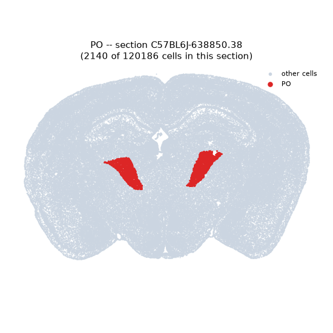
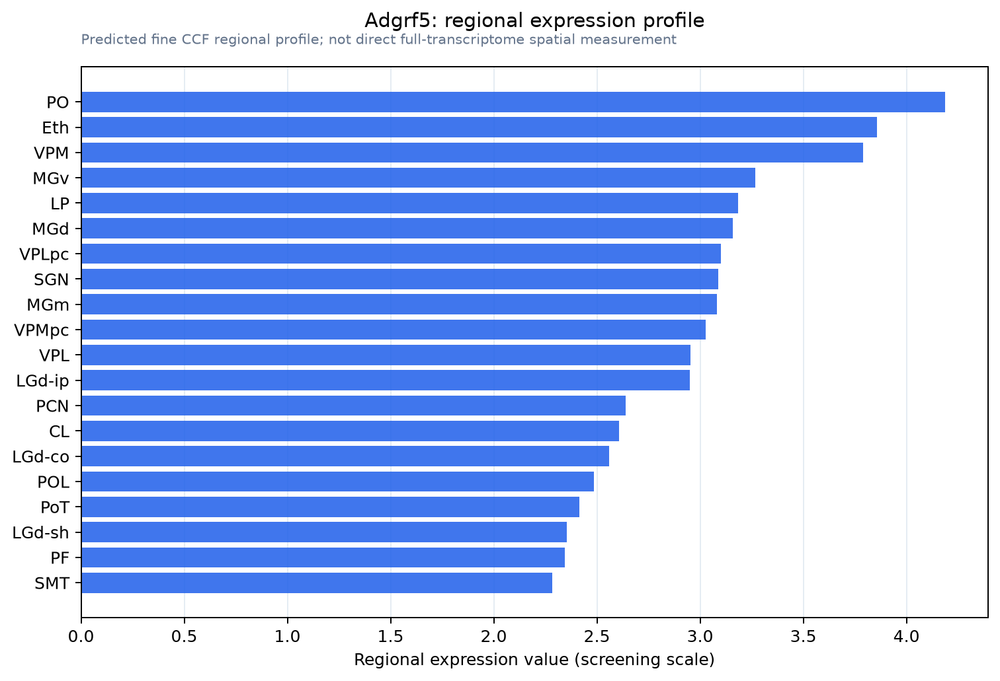

Adgrf5
Adhesion G protein-coupled receptor F5 (G protein-coupled hepta-helical receptor Ig-hepta) (Ig-Hepta) (G protein-coupled receptor 116)
Spatial tier: REGION_BIASED · Class: GPCR · Top region: PO (Posterior complex of the thalamus) · Positive regions: 36/554
45.0Discovery Score
41.3Targetability Score
CEvidence grade C
What this means: Adgrf5: fine CCF profile is region-biased toward PO (top regions: PO, Eth, VPM, MGv, LP); this is a discovery lead, not direct proof.
Function in PO: evidence, prediction, innovation
- Gene function
- ADGRF5 (GPR116, Ig-Hepta) is an adhesion G protein-coupled receptor with a long extracellular domain that is autoproteolytically cleaved at a GAIN domain; it signals through Gq and G12/13-RhoA. Its best-established roles are in lung alveolar type II cells, where it controls surfactant secretion, and in vascular endothelium, where it regulates barrier and angiogenic behaviour.
- Region function
- The posterior complex of the thalamus is a higher-order somatosensory nucleus that receives brainstem and cortical layer-5 input and projects to S1 septa, S2 and insular cortex, contributing to multi-whisker touch, nociceptive and multisensory processing.
- Published in this region
- inferred No region-specific literature found. The relevant comparison is cell type rather than nucleus: Niaudet 2015 and Niaudet 2019 showed Gpr116/Adgrf5 is expressed by vascular endothelium throughout the body (and lung epithelium) and that its loss perturbs endothelial patterning, which suggests thalamic Adgrf5 signal originates largely from the dense POm microvasculature.
- Predicted function
- Prediction: in the posterior thalamic complex ADGRF5 most likely acts in endothelial cells to maintain blood-brain barrier integrity and neurovascular coupling rather than in relay neurons. Endothelial-specific Adgrf5 deletion (Cdh5-CreERT2) is predicted to increase vascular leakage and alter stimulus-evoked blood flow in POm, with whisker-evoked fMRI/intrinsic-signal responses degraded while single-unit tuning stays intact. A neuronal contribution, if present, would appear as Gq-dependent changes in burst firing.
- Innovation
- ★★★★☆ 4/5 Adhesion GPCR biology at the thalamic neurovascular interface is unexplored, though the tools for endothelial conditional deletion are routine.
- Tools
- Adgrf5/Gpr116 knockout and floxed mouse lines; Cdh5-CreERT2 and Tie2-Cre for endothelial deletion; anti-GPR116 antibodies; no selective small-molecule ligand.
- References
Direct evidence located at the region
No Allen ISH section could be located at this region's centroid for the recorded experiments.
Look it up yourself: Allen Mouse Brain ISH for Adgrf5Allen reference atlas: PO (structure 1020)ABC Atlas MERFISH viewer(in the ABC Atlas choose dataset MERFISH-C57BL6J-638850-CCF, colour cells by gene "Adgrf5" or by parcellation_substructure "PO")All genes confined to PO + 3-D brain
Direct spatial evidence
MERFISH REGION LOCATOR

Regional expression figure

Predicted WMB × fine-CCF profile; not direct full-transcriptome spatial measurement.
Spatial profile
Evidence and specificity
- Evidence status
- PREDICTED_FINE
- Direct sources
- None; predicted localization only
- Exclusive threshold
- 12 positive regions out of 554
- Spatial specificity
- 0.299
- Top-region fraction
- 0.042
- Filter status
- PASS
Interpretation limits
- Cell-type-to-region projection is imputed expression, not direct spatial measurement.
- Adult reference atlases do not establish stability across age, sex, strain, state, or disease.
- Transcript abundance does not guarantee protein abundance or genetic-tool performance.